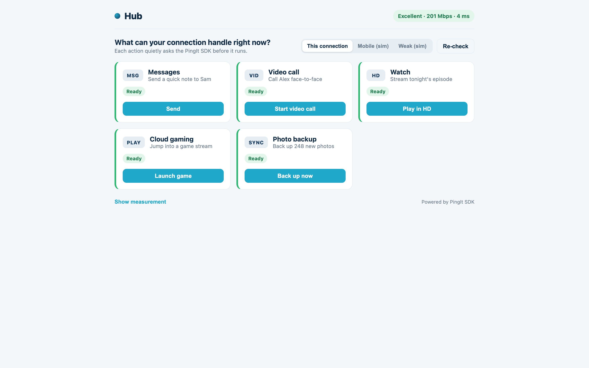
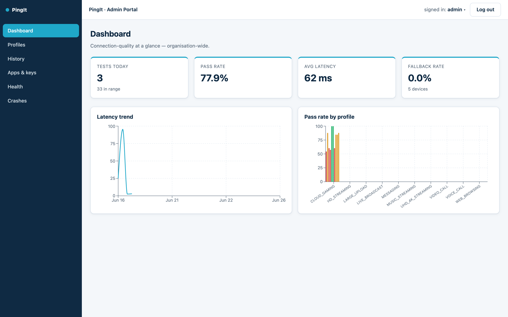

PingIt Documentation
PingIt is a mobile SDK that measures a device's internet connection and tells an app whether the connection is good enough for a given task, such as a video call or HD streaming. The SDK runs the measurement and makes the decision on the device. A server acts as the measurement target and stores readiness profiles and optional history, and a dashboard lets operators manage apps, tune profiles, and view analytics.
Get started
App Guide
Add the SDK to an Android app, configure auto-initialization, and call it.
Dashboard Guide
Run the backend and database, and operate the admin dashboard.
Screenshots
A demo app using the SDK (the "Hub"), and the admin dashboard:


Video and diagram
Video demonstration:
assets/demo-video.mp4).
Entity Relationship Diagram: see the rendered diagram under Architecture below.
Use cases and features
PingIt is useful in any app whose experience depends on connection quality. A few things you can build:
- A calling app that checks
VIDEO_CALLbefore dialing and offers an audio-only fallback when the link is weak. - A streaming app that picks HD or SD from
HD_STREAMINGorUHD_4K_STREAMING. - A cloud gaming client that gates play on the strict latency of
CLOUD_GAMING. - A backup app that defers a large upload until the link can handle
LARGE_UPLOAD.
Core features:
- Measurement of download, upload, latency, and jitter.
- Readiness profiles that turn a measurement into a clear pass or fail with a reason.
- On-device decisions, so a check does not require a server round trip.
- Auto initialization on app startup.
- Configurable history: none, last result on device, or full server history.
- A fallback measurement target and an honest offline result.
- Crash capture with deferred upload.
- Server-tuned, versioned thresholds editable from the dashboard.
Implementation and setup
To start using PingIt, run the backend and dashboard, register an app to get an
appId, and add that appId to the SDK.
- Run the backend and dashboard. See the Dashboard Guide.
- Open the dashboard at
http://localhost:5173and sign in. The seed creates an admin account (admin@pingit.dev) and a developer account (dev@pingit.dev). - Go to Apps and keys, register an app, and copy its
appIdand one-time API key. - Add the
appIdand your server endpoint to your Android app, through manifest auto-initialization or a call toPingIt.init. See the App Guide.
Architecture
How the SDK, server, database, and dashboard fit together:
flowchart LR
subgraph Device["Mobile app"]
SDK["PingIt SDK"]
end
subgraph Server["PingIt server"]
M["Measurement API"]
D["Data API"]
A["Admin API"]
end
DB[("Postgres")]
Portal["Dashboard"]
Fallback["Public fallback"]
SDK --> M
SDK --> D
SDK -. if primary is down .-> Fallback
D --> DB
A --> DB
Portal --> A
The data model:
erDiagram
APPS ||--o{ RESULTS : submits
APPS ||--o{ CRASHES : reports
APPS ||--o{ USERS : scopes
PROFILES {
text id PK
jsonb requires
int version
}
APPS {
text app_id PK
text name
}
USERS {
bigserial id PK
text email
text role
text app_id FK
}
RESULTS {
bigserial id PK
text app_id FK
text device_id
int score
}
CRASHES {
bigserial id PK
text app_id FK
text message
}
The full API reference and a sequence diagram of a readiness check are in the project README.